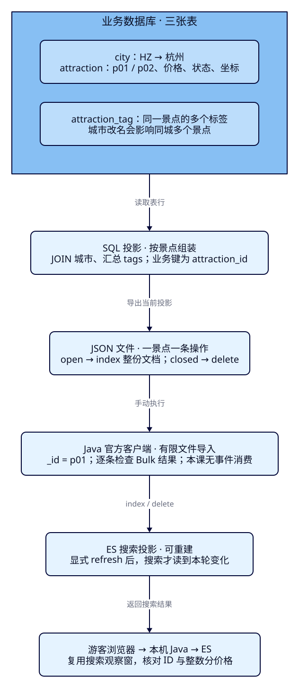
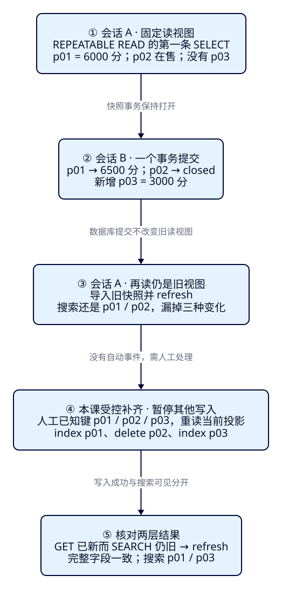

数据库的表，
为什么不能逐张搬进ES？
游客查“西湖”，卡片上的名字、城市、标签和价格可能来自几张业务表。商家把游船改为65元、把步道下架，搜索却还展示60元和旧景点。本课首次引入最小SQL数据源，亲手把表行组装成搜索文档，观察关联变化和快照缺口，再用受控补齐恢复结果。我们先弄清该同步什么、为什么会漏，下一课才连接真实变更日志。
学完能用输出证明什么
- 从city、attraction、attraction_tag三张表推导两份搜索文档，说明字段来源、金额单位、稳定业务键与下架规则。
- 证明城市改名、标签删除也会改变景点投影；重复导入不增加文档，完整覆盖能移除旧标签。
- 用两个真实SQL会话复现快照期间改价、下架、新增被漏掉，再分别核对DB提交、Java写入、GET和搜索可见；说清人工补齐尚未解决什么。
本课目录
图解跳转：01 · 表行怎样成为投影 · 02 · 快照期间发生了什么
1. 运营改了城市名，为什么景点表没动也要更新？
到F35，查询和权限已经能解释，但搜索资料仍来自固定文件。真正的旅游业务通常在数据库里维护景点基础资料；城市展示名由城市表维护，标签由关联表维护。游客想看到的是“西湖游船，杭州，亲子，60元”这一份完整结果，不是三张表各返回一行后再猜它们怎样对应。
Elasticsearch负责检索和分析面向查询的文档；业务数据库负责本课业务状态的事务提交。把多处事实按搜索需要组装成一份文档，叫搜索投影。它是业务数据的一种派生表示，能按规则重建，也可能暂时落后。数据库里改价成功，并不等于有人已经重新组装投影、送进ES、再让搜索读到。
因此，不能从“数据库有三张表”直接推出“ES需要三个索引”。本课以景点为结果单位，把同一景点的城市名、标签集合与价格放进一份文档。若把标签表单独搬到另一个索引，既有景点搜索不会自动做关系连接、合并字段，也不会在标签变化时自动改景点文档。其他文档边界是否合适取决于查询与更新方式；F23的酒店建模同样遵循这个原则。
2. 先约定一景点一份文档，再决定字段从哪里来
最小业务模型只有三张表，无用户、订单或支付系统。attraction_id为业务主键，city_code外键指向城市，标签表以景点ID和tag为联合主键。同一景点有两个标签是两行事实，投影却仍只应有一个景点。金额明确为CNY整数分；6000分是60.00元，坐标为经纬度数值。
| 表 | 初始事实 | 搜索文档中的去向 |
|---|---|---|
| city | HZ → 杭州 | city_code、city_name；同城景点共享展示名 |
| attraction | p01 西湖 游船 / 6000 / open；p02 西湖 步道 / 0 / open | attraction_id、name、ticket_price_fen、status、location |
| attraction_tag | p01 → 亲子、游船；p02 → 步行 | tags数组，不把同一景点展开成多个结果 |
ES的_id直接使用attraction_id，如p01。来源系统若不共享全局ID，应先约定含来源/实体类型的稳定键；不能把本样本的p01规则套到所有业务。固定_id让相同投影再次index时覆盖原文档，但不检查新旧先后：旧文件重导仍可能覆盖新价格。本课串行导入、没有并发写入，不宣称完成幂等版本或乱序保护。
再明确下架语义：SQL保留closed行，便于本课观察；搜索投影只保留open景点。因此open产生index整份文档，closed产生delete，不能简单WHERE status='open'后忽略旧ES文档。这样过滤虽然不再导出p02，却没有向ES表达“删除已存在的p02”。业务物理删除连当前行也不留下，未来还需要事件中的键，本课不自动捕获它。

3. 独立SQL库与ES，不改已有实验
本课使用独立Compose项目es-framework-f36，PostgreSQL17.5-bookworm锁定清单digest，数据库travel_f36、用户travel，仅容器本地socket操作，不映射宿主机端口。固定补丁用于复现实验，不表示当前最新版本推荐。ES9.4.0/Lucene10.4.0，单节点travel-f36-lab / travel-f36-es，回环20036，256MiB堆/768MiB限额；PG限额256MiB。两者同一Docker VM，不验证高可用或性能。
ES索引tut-f36-attractions-v001显式1主0副、dynamic=strict、refresh_interval=-1，通过读写alias访问。name用whitespace沿用固定词样本，tags/city_name为keyword；不把本课投影实验说成中文召回改进。此隔离环境显式关闭ES认证，只用于本机合成资料，Docker网络内仍可访问；部署所需TLS/权限继续按F35设计。随机PG初始化口令仅留在被忽略的.local，目录0700/文件0600，不进入Pages或浏览器。
cd projects/travel-search
python3 labs/f36/lab.py init --out /tmp/f36-reader-init
python3 labs/f36/lab.py start --out /tmp/f36-reader-setup
cd backend
./mvnw -B -ntp clean package dependency:build-classpath -Dmdep.outputFile=target/f36-classpath.txt
cd ..init只用于没有本课秘密和数据卷的全新环境；已有资源使用start原卷重启。应用仍为Boot4.0.8 / JDK25 / Java与Rest5 Client9.4.8，Maven3.9.11；应用JDK与ES bundled JVM26.0.1分开核对。完整Compose、手工步骤与重做入口随课交付。
完整SQL建表、初始数据与ES mapping
CREATE SCHEMA f36;
CREATE TABLE f36.city (
city_code text PRIMARY KEY,
city_name text NOT NULL
);
CREATE TABLE f36.attraction (
attraction_id text PRIMARY KEY,
name text NOT NULL,
city_code text NOT NULL REFERENCES f36.city(city_code),
ticket_price_fen integer NOT NULL CHECK (ticket_price_fen >= 0),
status text NOT NULL CHECK (status IN ('open', 'closed')),
latitude numeric(8,5) NOT NULL,
longitude numeric(8,5) NOT NULL
);
CREATE TABLE f36.attraction_tag (
attraction_id text NOT NULL REFERENCES f36.attraction(attraction_id),
tag text NOT NULL,
PRIMARY KEY (attraction_id, tag)
);BEGIN;
INSERT INTO f36.city VALUES ('HZ', '杭州');
INSERT INTO f36.attraction VALUES
('p01', '西湖 游船', 'HZ', 6000, 'open', 30.25000, 120.15000),
('p02', '西湖 步道', 'HZ', 0, 'open', 30.25100, 120.15100);
INSERT INTO f36.attraction_tag VALUES
('p01', '亲子'), ('p01', '游船'), ('p02', '步行');
COMMIT;{
"settings": {
"number_of_shards": 1,
"number_of_replicas": 0,
"refresh_interval": "-1"
},
"mappings": {
"dynamic": "strict",
"properties": {
"attraction_id": {
"type": "keyword"
},
"name": {
"type": "text",
"analyzer": "whitespace"
},
"city_code": {
"type": "keyword"
},
"city_name": {
"type": "keyword"
},
"ticket_price_fen": {
"type": "integer",
"coerce": false
},
"currency": {
"type": "keyword"
},
"status": {
"type": "keyword"
},
"location": {
"type": "geo_point"
},
"tags": {
"type": "keyword"
}
}
}
}{
"actions": [
{
"add": {
"index": "tut-f36-attractions-v001",
"alias": "tut-f36-attractions-read"
}
},
{
"add": {
"index": "tut-f36-attractions-v001",
"alias": "tut-f36-attractions-write",
"is_write_index": true
}
}
]
}4. f36-c01：三张表怎样得到两份搜索文档
下面的SQL视图定义了投影规则，本身不复制数据或自动写ES。主查询按景点取一行，JOIN取城市名；相关子查询只汇总这个景点的标签，COALESCE把没有标签的情况变为[]。标签显式按C排序，使文件和核对稳定；标签顺序不是推荐次序。即使p01有两个标签，也不会产生两份景点。
CREATE VIEW f36.search_projection AS
SELECT a.attraction_id AS id,
CASE WHEN a.status = 'open' THEN 'index' ELSE 'delete' END AS op,
CASE WHEN a.status = 'open' THEN jsonb_build_object(
'attraction_id', a.attraction_id,
'name', a.name,
'city_code', a.city_code,
'city_name', c.city_name,
'ticket_price_fen', a.ticket_price_fen,
'currency', 'CNY',
'status', a.status,
'location', jsonb_build_object('lat', a.latitude, 'lon', a.longitude),
'tags', COALESCE((SELECT jsonb_agg(t.tag ORDER BY t.tag COLLATE "C")
FROM f36.attraction_tag t
WHERE t.attraction_id = a.attraction_id), '[]'::jsonb)
) ELSE NULL END AS document
FROM f36.attraction a
JOIN f36.city c ON c.city_code = a.city_code;导出每行包含op、id、document。它是本课文件契约，不是Debezium消息格式；id是业务键，document只在index时有完整内容。导出SQL为：
SELECT jsonb_build_object('op', op, 'id', id, 'document', document)
FROM f36.search_projection ORDER BY id;先预测结果：p01标签为亲子/游船、价格6000分；p02标签为步行、价格0分；两者city_name都是杭州。执行下列配套命令可逐条展开SQL和curl；prepare要求全新本课表/索引，已有资源先按文末点名清理。
bash labs/f36/requests.sh prepare /tmp/f36-manual
bash labs/f36/requests.sh inspectprepare将SQL输出转成下面的Bulk数据；每个index先一行操作元数据，再一行完整文档。请求路径是POST /tut-f36-attractions-write/_bulk?require_alias=true，Content-Type为application/x-ndjson，末尾保留换行。require_alias防止误用物理名，不替代权限。
实际初始SQL投影对应的完整Bulk请求体
{"index": {"_id": "p01"}}
{"name": "西湖 游船", "tags": ["亲子", "游船"], "status": "open", "currency": "CNY", "location": {"lat": 30.25, "lon": 120.15}, "city_code": "HZ", "city_name": "杭州", "attraction_id": "p01", "ticket_price_fen": 6000}
{"index": {"_id": "p02"}}
{"name": "西湖 步道", "tags": ["步行"], "status": "open", "currency": "CNY", "location": {"lat": 30.251, "lon": 120.151}, "city_code": "HZ", "city_name": "杭州", "attraction_id": "p02", "ticket_price_fen": 0}实测HTTP200且errors=false，两条index均201/created；显式refresh后，按attraction_id排序的完整_source有且只有p01、p02。Bulk外层HTTP200不代表每条文档成功，要核对items中的ID、状态和错误。重复导入时固定_id应得到updated，文档数仍为2；ES不会根据document里恰好含有attraction_id自动去重，必须显式传id。
5. 同一份投影，Java怎样表达index与delete
本课不改既有搜索Controller，也不把数据库账号放进浏览器。独立ProjectionImport读取SQL导出文件，构造一个有限批次，目标锁定write alias；SQL负责多表组装，Java仅验证文件契约并执行完整覆盖/删除。文件读取、ID唯一性和大小限制见完整Java文件。关键分支如下：
if ("index".equals(op)) {
var document = row.path("document");
if (!id.equals(document.path("attraction_id").asString())
|| !"open".equals(document.path("status").asString())) {
throw new IllegalArgumentException("Projection ID/status mismatch");
}
var body = JsonData.fromJson(json.writeValueAsString(document));
bulk.operations(o -> o.index(i -> i.id(id).document(body)));
} else if ("delete".equals(op) && row.path("document").isNull()) {
bulk.operations(o -> o.delete(d -> d.id(id)));
} else {
throw new IllegalArgumentException("Unsupported projection operation");
}
}
if (ids.isEmpty() || ids.size() > 100) {
throw new IllegalArgumentException("This teaching importer accepts 1..100 records");
}
try (var client = EsConfiguration.connect(url, ca, key)) {
var response = client.bulk(bulk.build());
boolean failed = false;
for (var item : response.items()) {
boolean absentDelete = item.operationType().jsonValue().equals("delete")
&& item.status() == 404 && item.error() == null;
boolean ok = item.error() == null && (item.status() < 300 || absentDelete);
System.out.printf("%s %s %d %s%n", item.operationType().jsonValue(),
item.id(), item.status(), item.result());
failed |= !ok;
}
if (failed || response.items().size() != ids.size()) {
throw new IllegalStateException("Bulk item failed; stop and inspect; no checkpoint advanced");
}index是替换整份_source；它与只改部分字段的_update不同，本课删除标签后重算的数组会取代旧数组。delete若目标已经不存在，只有无error的404/not_found可视为“目标已不存在”；其他失败必须停止。导入器不推进任何日志位置，也不实现重试、事务回滚或失败重放。Bulk内有失败时，已成功项不会一起撤回，不能把它当数据库事务。
bash labs/f36/java.sh /tmp/f36-manual/initial.ndjson
bash labs/f36/requests.sh refresh
bash labs/f36/requests.sh inspect实测两条index均200/updated、仍是两份文档。这样证明相同键重复导入没有增加结果，不证明旧文件无法覆盖新值。写入端点的TLS/凭据配置复用F35配置类；本课默认连接自己的无认证隔离节点。
6. f36-c02：景点行没动，投影为什么已经旧了？
现在只改city展示名，并删除p01的一个标签关联，保持attraction里的两行完全不动：
BEGIN;
UPDATE f36.city SET city_name = '杭州（旅游展示名）' WHERE city_code = 'HZ';
DELETE FROM f36.attraction_tag WHERE attraction_id = 'p01' AND tag = '游船';
COMMIT;bash labs/f36/requests.sh related /tmp/f36-manual
bash labs/f36/requests.sh inspect
bash labs/f36/java.sh /tmp/f36-manual/related.ndjson
bash labs/f36/requests.sh refresh
bash labs/f36/requests.sh inspect第一次inspect仍显示杭州、p01仍有游船标签，证明DB提交不会通知本课ES。当前SQL投影已经是“杭州（旅游展示名）”，p01只有亲子；重导后两个文档的city_name都改变，p01旧标签被移除。只按attraction表的更新时间找变化，连这次应刷新哪些景点都可能漏掉。城市变化影响该城市全部景点，标签关联变化影响对应景点；未来关联转移还需考虑旧、新所属实体。
此处为讲清模型而重新导出整个两景点集合，没有实现事件路由器。F39才从多表事件找出受影响ID并重投影；本课不能把一次全量重算说成已实现持续多表同步。完整字段通过REST核对，既有卡片不显示新增的city_name和tags。
7. f36-c03：全量导出一致，为什么仍然漏变化？
已有资料第一次进入ES，需要读出一批已有数据，称为全量快照；之后发生的增删改是增量。这里的“快照”指数据库读视图，区别于F34备份ES分片的Snapshot。全量回答“这个读视图里有什么”，增量回答“之后什么改变了”，两者需要衔接。
使用两个真实psql会话消除“操作要够快”的竞态。会话A开启REPEATABLE READ只读事务，第一条SELECT固定它的可见视图，再导出p01/6000、p02/open。BEGIN本身不固定这个读边界。保持A不提交，让B在一个事务里改价、下架、新增。再由A导出一次，仍应和第一次完全相同；一致性成功恰好意味着它看不到后来的提交。
docker compose -f infra/f36/compose.yaml exec postgres psql -X -qAt -v ON_ERROR_STOP=1 -U travel -d travel_f36BEGIN ISOLATION LEVEL REPEATABLE READ READ ONLY;
-- 第一条 SELECT 固定此事务的可见视图；BEGIN 本身不是这个读边界。
SELECT current_setting('transaction_isolation') AS isolation, count(*) AS rows
FROM f36.attraction;
\o /tmp/f36-snapshot.ndjson
\i /lesson/export.sql
\o
-- 保持本会话开启。另一个终端执行 during-snapshot.sql 后，再执行 snapshot-end.sql。A显示repeatable read与2，文件保存在PG容器的/tmp。另一个终端B运行bash labs/f36/requests.sh change，执行的完整事务为：
BEGIN;
UPDATE f36.attraction SET ticket_price_fen = 6500 WHERE attraction_id = 'p01';
UPDATE f36.attraction SET status = 'closed' WHERE attraction_id = 'p02';
INSERT INTO f36.attraction VALUES
('p03', '西湖 湿地', 'HZ', 3000, 'open', 30.25200, 120.15200);
INSERT INTO f36.attraction_tag VALUES ('p03', '观鸟');
COMMIT;回到同一个A会话输入\i /lesson/snapshot-end.sql，它再次导出后才COMMIT，再\q退出。用README中的compose cp取回两份文件并cmp核对。不能重开A来“再读”，否则已经换成新的读视图。随后把第一份旧快照重新导入并refresh，结果仍是p01/6000、p02/0，没有p03。

这不是“等待ES多刷新一会就会追上”：旧文件压根没有6500、p03或p02删除操作，refresh只能让已经写入ES的变化可搜索。只在导出完成后才开始记变化，还会漏掉导出期间已提交的这一批。增加副本、重做alias或多次refresh都不会凭空产生缺失操作。
8. 已知三个键，怎样补齐并分开验证每一层？
本课在隔离环境中暂停其他写入，明确由B的固定事务知道受影响键p01/p02/p03，重新读它们当前的完整投影。这个人工清单既包含新增，也包含下架；只看当前open集合无法给出p02的删除指令。
-- 本课受控事务明确改了这三个 ID；不是从日志自动捕获的变更清单。
SELECT jsonb_build_object('op', op, 'id', id, 'document', document)
FROM f36.search_projection WHERE id IN ('p01', 'p02', 'p03') ORDER BY id;bash labs/f36/requests.sh delta /tmp/f36-manual
bash labs/f36/java.sh /tmp/f36-manual/delta.ndjson
curl --fail-with-body -sS http://127.0.0.1:20036/tut-f36-attractions-read/_doc/p01
bash labs/f36/requests.sh inspect
bash labs/f36/requests.sh refresh
bash labs/f36/requests.sh inspectJava实测index p01 200/updated、delete p02 200/deleted、index p03 201/created。refresh=-1时，GET p01已经6500，GET p02已404；SEARCH仍读旧视图p01/6000、p02/0。显式refresh后才变为p01/6500、p03/3000。前后都恰好两份文档，计数相同完全不能证明正确；最终按ID比较所有投影字段、标签和删除状态，再重读SQL确认受控暂停期间来源未变。
| 观察点 | 本课实际证据 | 能证明到哪一层 |
|---|---|---|
| DB提交 | B提交后新会话读到6500/closed/p03，A仍旧 | 业务事实已提交；A保留历史读视图 |
| 事件、日志位置 | 本课没有捕获器、Kafka或offset | 不能证明增量自动捕获、保留或重放 |
| Java投影文件 | index p01 / delete p02 / index p03 | 人工已知键的当前投影已组装 |
| ES写入 | Bulk逐条成功；GET p01=6500、p02=404 | 已写入；不能代替搜索验证 |
| 搜索可见 | refresh后完整字段一致，p01/p03 | 固定样本、暂停其他写入下补齐成功 |
复用既有本机观察窗，在另一JDK25终端启动，不需要写前端：
ES_URL=http://127.0.0.1:20036 ES_INDEX=tut-f36-attractions-read ES_CA_FILE= ES_API_KEY_FILE= APP_PORT=18086 java -Xms64m -Xmx192m -jar backend/target/travel-search-0.7.0.jar打开本机景点观察窗，默认条件西湖、HZ、200元、圆心30.25/120.15、3km；实际调用是浏览器→Java→ES。初始、快照缺口、补齐但未refresh三个点仍是p01/60.00元与p02/0元；最终变p01/65.00元与p03/30.00元。原始接口仍以整数分返回，esRequest可独立REST重放。新增城市展示名/标签用上表的完整_source核对，界面并未增加相应组件。
9. 追平需要什么，下一课才不会再靠手工清单？
一次受控补齐成立，依赖本课没有其他写入者、三个键确实完整、失败立即停止并最终逐字段核对。如果另有事务持续提交，或一行被物理删除，当前SQL导出不会自动告诉我们该补哪些键。只记一个墙上时间、最后一页ID或景点表updated_at，也不等于覆盖关联表变化、提交先后和删除。
持续链路需要把一致初始快照与可恢复的增量位置协调起来：快照读取期间的变化也被保留，后续按投影规则应用到可说明的提交边界；位置可恢复，写入/删除无未处理失败，再验证搜索结果。这个边界不能只用“队列暂时空了”或“两个索引条数相等”代替。这里讲的是需要满足的条件，不是本课已经实现的算法；多表路由、乱序/失败与持续重建分别由F39–F41继续完成。
F37先在独立PG环境读取WAL，经Debezium/Kafka把最小单表INSERT、UPDATE、DELETE交给Java并进入ES，核对事件键、位置和搜索结果。F38再串行使用独立MySQL环境比较binlog；本课不安装两套CDC系统，也不把当前导出文件称为真实消息流。
10. 点名清理后重做，验证记录各自负责什么
python3 labs/f36/lab.py run --out /tmp/f36-reader-round1
python3 labs/f36/lab.py cleanup --out /tmp/f36-reader-cleanup1
python3 labs/f36/lab.py run --out /tmp/f36-reader-round2
python3 labs/f36/lab.py cleanup --out /tmp/f36-reader-cleanup2
python3 labs/f36/lab.py down --out /tmp/f36-reader-down每个输出目录必须不存在；run要求本课表/索引为空，自动启动并停止自己的Java。手工路径先在原终端Ctrl+C停止Java、结束未提交SQL会话，再cleanup。cleanup核对独立集群和库，拒绝外来业务索引，只删除tut-f36-attractions-v001及alias、DROP SCHEMA f36 CASCADE；保留其他schema、系统索引、卷与密码。down只移除本课容器和网络，原卷重启继续start，不需要重新init。重复prepare会因资源已存在而失败，不用改业务ID掩盖旧数据。
本课实际完成两轮SQL/ES/Java与四个观察点的浏览器调用；构建、运行、图生成、HTTP阅读与视觉分别记录在执行记录和内容与阅读记录。教学HTTP按调用入口计数，Java Bulk单列，身份/清理/浏览器附加另计。没有实现或验证WAL/binlog、Kafka、自动事件路由、offset提交、故障重放、持续写入追平、物理删除自动捕获或生产吞吐；当前入口无法设置或读回最新gpt-6.1-sol/max，作者自审不称独立审阅。
能力检查：从变化推导必须更新的文档
1. p01有两个标签，为什么初始ES不是三份文档？
结果单位是景点。关联子查询把p01两条标签汇成数组，主查询仍每个attraction一行；p01/p02分别以稳定业务键成为两份文档。
2. 城市改名但attraction表没更新，只监听景点行够吗？
不够。投影还依赖city_name，所有引用HZ的景点都可能需刷新。本课重算两份；事件到受影响ID的路由留到F39。
3. 导出时只留下open行，旧p02会自动从ES消失吗？
不会。没有导出的键不会自动转成delete；本课保留closed行并产生p02删除操作。物理删除需要另有完整变更键来源。
4. A里再次导出仍6000，证明B的6500没提交吗？
不能。A的REPEATABLE READ保留第一条SELECT时的读视图；B提交可由新会话验证。A中一致与搜索最终跟上是不同问题。
5. Java已写6500，为什么多次SEARCH还6000？
本课refresh=-1。先GET核对新_source，再显式refresh，最后验证搜索。若根本没导入6500，refresh也不能补出它。
6. 两边都是两份文档，为什么本课仍判旧快照不正确？
旧集合是p01/6000、p02/0，当前应为p01/6500、p03/3000。要按ID核对完整字段、标签、上下架和删除状态，不能只比count。
7. 独立推演：新增p04属于HZ，随后城市改名，应刷新谁？
先确保新增p04有投影，再考虑所有引用HZ的景点。若p02仍closed，应保持其ES删除状态；对其余open景点重算city_name。不要只处理新增行，也不要把下架行重新index。实际事件路由和先后保护尚未由本课实现。
8. 手工补齐成功，已经证明CDC可靠了吗？
没有。本课靠固定事务提供完整键、暂停其他写入，再重读当前状态。日志起点、保留、删除事件、重启恢复、offset与乱序均未验证，F37起逐步建立证据。
实际陷阱
速记
| 问题 | 本课规则 | 判断证据 |
|---|---|---|
| 一张表一个索引？ | 按搜索结果单位设计投影 | 三表→p01/p02两份景点 |
| 业务键 | _id=attraction_id，显式传入 | 重复index为updated，仍两份 |
| 关联变化 | 重算所有受影响景点 | 城市名两份都变、旧标签移除 |
| 快照/增量 | 一致读视图＋之后变化的衔接 | 旧快照漏改价/下架/新增 |
| 受控补齐 | 已知键、暂停其他写入、index/delete | 完整字段一致，最终p01/p03 |
| 可见性 | DB提交、写入与搜索分别测 | GET先新，refresh后SEARCH新 |
先说明文档由哪些事实组成，再证明每种变化怎样抵达搜索；一份全量文件不能代替持续增量。